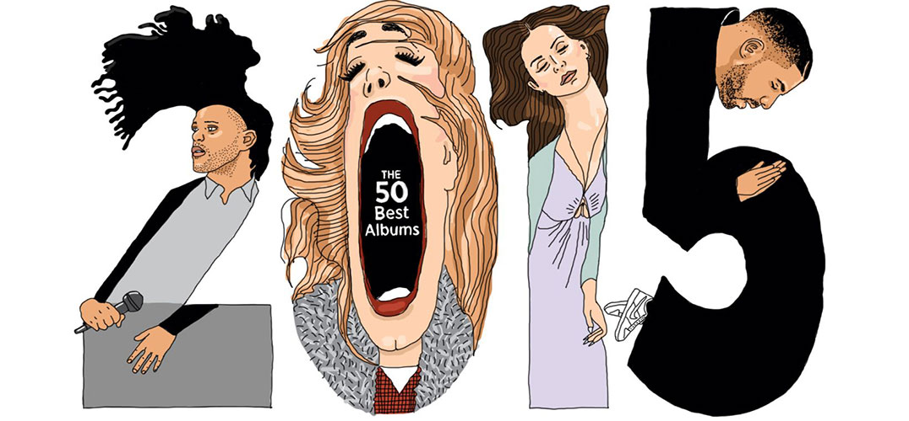

解压的方式！
《滚石杂志》2015年度专辑Top

各大影视歌年度盘点如期而至，近日，知名音乐杂志《滚石》推出了2015年50张最佳专辑榜单。这篇文章，我们拉出前5名专辑，来看看这年度5张最佳专辑中，你都听过哪些呢？
1.《To Pimp A Butterfly》——Kendrick Lamar
也许国内歌迷还不熟悉这个名字，但Kendrick Lamar毫无疑问已经是当下美国风头最劲的饶舌歌手。在凭借前两张专辑打响名号后，他的第三张个人专辑《To Pimp A Butterfly》再次展现了这位青年艺术家的灵感世界。而如果你了解Hip-Hop的历史、黑人在美国流行艺术界的地位，如果你能知道Kendrick的歌词真正唱的是什么，就会毫不惊讶这张专辑如何能在《滚石》、《NME》等权威杂志年度榜单上稳获第一。
《To Pimp A Butterfly》以Kendrick创作诗歌为主轴，每首看似独立的单曲，因为这首诗被巧妙串联。在菲董、Snoop、Dr. Dre等大师操盘下，这张专辑里加入了Funk、Jazz甚至更多实验元素，黑奴Kunta Kinte、天王MJ、偶像Tupac都成为了Kendrick的歌词灵感。在专辑最后，Kendrick对长眠地下的Tupac进行了一番“访谈”，顺便点题专辑名：“这个城市里太多人甘于做一条毛虫，而放弃成为会飞的蝴蝶，蝴蝶的美丽让他们惊慌。”
2.《25》——Adele
在连续破掉多项销量纪录后，阿黛尔的新专辑《25》显然成为了2015年最受关注的音乐话题。《滚石》称她“以雷霆之势昂首回归，没有让等了她4年的乐迷失望”。虽然在不少人看来，相比她的上一张专辑《21》，这次的《25》只能算平庸之作。
如果把所有的这些期待、突破、格莱美等纷杂的压力抛掉，《25》无疑是一张出色的专辑，代表了西方流行音乐工业的生产标准。我们可以听到，阿黛尔已经不是那个失恋心碎的少女，而是作为一个过来人对自己的往事看开，缓缓道来。不知道你是否也被电台里每小时一遍的《Hello》烦透了，所以不如来聆听现场版的《When We Were Young》吧。
3.《If You're Reading This It's Too Late》——Drake
虽然Drake秋天推出了一曲《Hotline Bling》横扫欧美，但他在2月发行的大碟《If You're Reading This It's Too Late》才是今年最大的惊喜。在没怎么进行宣传的情况下，这张唱片成为了当时的年度最高销量数字专辑——尽管Drake本人坚称这只是一张Mixtape而非新专辑。
在这张唱片中，一贯被乐迷诟病曲风单调的Drake天马行空地尝试了各种风格转换，整个演绎状态非常放松自在。在这首《Jungle》中，“公鸭嗓”Drake展现了前所未有的细腻。
4.《Black Messiah》——D'Angelo and the Vanguard
对于这个年代的歌迷来说，骚灵大神D'Angelo似乎已经成为了传说中的人物——这张《Black Messiah》发行于2014年最后一天，要知道，他发上一张专辑可是在2000年！
需要注意的是，这张专辑的主角并非D'Angelo，而是D'Angelo and the Vanguard这个乐队整体。专辑前三首歌中乐队的分量都非常重，D'Angelo的声线则非常低调。而到了《Really Love》，D'Angelo再度展现了他“Prince接班人”的完美声线，铺垫部分的弗拉明戈吉他，低吟的对话，直到鼓点响起你才会意识到这是一首带有浓浓爵士味的R&B歌曲。
5.《Beauty Behind the Madness》——The Weeknd
从《五十度灰》电影插曲《Earned It》开始，“盆栽精”The Weeknd的蹿红速度可谓现象级。下半年又是《Can't Feel My Face》和《The Hills》一连串主打，让这个几乎从不接受媒体采访、上综艺节目的低调新人能一直保持音乐曝光度。
销量、品质、人气、突破性，这张《Beauty Behind the Madness》一个不缺，在明年格莱美上它必有一席之地。The Weeknd刚出现时，他最为人所知的标签就是神似MJ的声线。在这首《Can't Feel My Face》中这一特质尽显。
“维密”很无聊？
正当大家如火如荼塞满购物车时，地球对面的美利坚也有一场大派对：北京时间凌晨 4 点，一年一度的维多利亚的秘密内衣秀在Lexington Avenue Armory开演。天使超模、梦幻胸罩、黄金翅膀、几万颗水晶…… 宇宙级内衣品牌维秘办起大秀，永远是本着“不搞大就回家”的精神。
但今年特别奇怪的是，维秘开秀前就一直在炒话题——人气模特 Gigi 挤走了黑珍珠 Jourdan？表演嘉宾 Rihanna 因为看不惯某人而退出维秘表演？继去年移师伦敦后又重回美国主场的 2015 年维秘迎来了 20 周年，显然需要用点炒作来吸引更多关注。没办法，维多利亚的秘密时装秀越来越乏善可陈；实际上，维秘本来就是这个星球上最无聊的大型时装秀。
1、“内衣界的春晚”
维秘的主题就是各种宏大各种闪，所谓 T 台上也只见热闹，没有 high fashion。一万道镁光灯投射在舞台上，炫目的巨大屏幕当做回放画面镜头，而闪光的 T 台上长着变异翅膀的模特，身上有几万颗施华洛世奇水晶。另一边，流行歌手唱完一首又一首劲歌金曲，跟着模特满场飞。
维秘最后一个高光时刻，定格在遥远的 2006 年：对于今天的维秘来讲，台步和神态已经不那么重要了，似乎只要会送飞吻就行了。
2、维秘的衣服一年比一年难看
内衣秀的主角其实是大家都习惯性忽略不计的内衣，抛开 fantasy bra 和所有装置，这些新系列内衣究竟好不好看呢？答案是非常普通。其实你买过就知道，维秘的内衣质量也和样子一样普通。
3、炸裂的“不高级粉”
维秘的后台就是一个字：粉。从时尚圈到苹果手机，2015 年大家都爱上了维斯·安德森电影里的那种高级的水粉色调，不过维秘的品味仍然停留在本世纪初，到处是饱和度颇高的艳粉色。
4、直男心声
某种程度上来说，维秘就代表了让人血脉喷张的性感（尽管关注维秘的大多数是女生），那么直男究竟是如何看待这场貌似张张都是大福利的内衣秀呢？伦敦的科技记者 Seth Stevenson 被邀请去围观了去年的维秘，秀后他写道：
台上的这些模特，如果近看的话实际上并非那么美艳，我知道这听起来很疯狂，但不少维秘模特与其说性感不如说吓人。对于中等身材的我来说，她们几乎以一种慑人的姿态出现在我面前。她们的四肢像牙签一样看起来随时都会折断，腿和身体也不符比例，像瘦极的小马。有些女孩面容非常可爱，但另外一些模特长得有些极端而毫不吸引人——突出的颧骨悬在脸的两端，像脸上的一对翅膀。我光是想一想就要颤抖。总之，镜头前和镁光灯底下的模特依然动人，但在亮光处近看却并非如此。我更喜欢那些普通的、身高 1米 6 左右、脸蛋像苹果一样的可爱女孩。 而《Cosmopolitan》的记者 Frank Kobola 在电视机前看完了当年的维秘秀后，就这样说：
在我小时候，维秘画册意味着撸管…… 但现在闹腾得不像话。每当我看到这些奥丁女战神打扮的模特边上还有 Taylor Swift 在唱歌的场景，就感觉头脑超负荷了。…… 完全不明白这对于任何人而言有何吸引力，就是一场混杂着激动、闪光、音效、和霉霉的大混战。
除了跟天使互动到满场飞的明星年年岁岁人不同，场面历年来也没什么大分别。真是流水的霉霉，铁打的维秘。
这个星球上最美的人，却在每年冬天开始的时候组成了可能最吸睛却也最无趣的一场秀。
2016，谁将问鼎建筑界诺贝尔奖？
普利兹克建筑奖（Pritzker Architecture Prize）即将在 2016 年 1 月 13 日宣布评选结果。在此之前，对于谁会拿下这座“建筑界诺贝尔奖”的猜测已成为热门话题。入围名单中，除了有意大利建筑师斯蒂法诺•博埃里（Stefonao Boeri）、智利建筑师亚历杭德罗•阿拉维纳（Alejandro Aravena）等热门人物之外，还看到了熟悉的华人建筑师马岩松。

本届普利兹克建筑奖的有力竞争者：智利建筑师亚历杭德罗•阿拉维纳（Alejandro Aravena）

亚历杭德罗•阿拉维纳作品Anacletoc Angelini UC创新中心

意大利建筑师斯蒂法诺•博埃里（Stefonao Boeri）

意大利建筑师斯蒂法诺•博埃里（Stefonao Boeri）是本届普利兹克奖的热门人选，新作垂直森林是米兰城市景观中一个新的里程碑，作为标志性项目之一出现在2015年世博会中。

马岩松

马岩松最新项目，位于朝阳公园以南的“中央公园广场”项目已经破土动工，其设计体现出马岩松的“山水城市”理念。
年长是获奖优势？
2015 年的普利兹克建筑奖颁给了现代建筑巨匠弗雷•奥托，遗憾的是奥托未能亲手领取这一至高荣誉便辞世了。今年奖项又是否会颁发给年纪较大、成果丰厚的建筑师？比如 89 岁高龄的阿根廷裔美国建筑师西萨•佩里（Cesar Pelli）亦或是刚刚荣获2015 美国建筑师协会（AIA）金奖的加拿大籍以色列裔建筑师，77岁的萨夫迪（Moshe Safdie）。
佩里是位不折不扣的“摩天大楼爱好者”，代表作马来西亚双峰塔、香港国际金融中心等都十分知名。而萨夫迪似乎恰恰是佩里的反面，他曾在加拿大蒙特利尔圣罗伦斯河畔（Saint Lawrence River）建造了名为Habitat67的住宅社区，外表看起来就象是随意堆放的积木，完全背离精英建筑的美观精妙。有趣的是，萨夫迪原想让 Habitat 67 成为未来中低收入族群都能安心居住的理想住所型态，但这样的美意，在随着居民的迁移与闲置一段日子后，逐渐转变成“识货”高阶族群用来“收藏”的设计住宅。

加拿大籍以色列裔建筑师，77岁的萨夫迪（Moshe Safdie）


1967 年蒙特利尔世博主题“人类与世界”（Manand His World），灵感取经于《小王子》作者安东尼‧圣修伯里撰写的知名小说《人类的土地》（Wind,Sand and Stars）。Habitat67 便是以故事中，人与人之间的团结、生命的意义、以及对未来的梦想来作为设计主轴


萨夫迪2005年经典作品：以色列犹太大屠杀纪念馆（Yad Vashem）


萨夫迪最近一项备受瞩目的建筑是新加坡樟宜机场的“宝石计划”扩建工程。目前已开始动工，预计2018年落成启用。
当然，在年轻一辈建筑师中，若论及近年来在建筑界的活跃度和创新思维，创办了BIG建筑事务所的丹麦建筑师比雅克•英格斯（BjarkeIngels）呼声较高。BIG的出现为近几年的建筑界注入了一股强大的新鲜力量，作品蔑视一切公约与信条，大胆地表达出其内心的梦想。英格斯常常将可持续发展与社会学的概念引入其设计内，却往往寻求一种介于俏皮与实际应用间的平衡。

丹麦建筑师 比雅克•英格斯（BjarkeIngels）


BIG在美国凤凰城所做的观景台（Phoenix Observation Tower）被命名为ThePin，这根巨大的混凝土“针”内设置了三部电梯，将参观人流从狭窄的“针管”内运送到顶部的圆球中。人们在顶部盘旋而上，纵览城市全景，真有如漫步在空中的感觉。

比雅克•英格斯为母校老海勒鲁普高中设计的体育馆（Gammel Hellerup Gymnasium）

BIG设计的格陵兰国家美术馆。3000平米的博物馆布局巧妙结合了周围景观。形式类似于一个融化的圆环，遵循着自然地势，融合着冰川、海洋与雪。

BIG设计的哥本哈根超级线性公园
人道主义为竞争加分？
注重人道主义的普利兹克建筑奖也曾因为社会影响的考量，将大奖颁给以人道主义著称的建筑师。比如日本建筑师伊东丰雄，他获普利兹克奖那年，正好在他完成日本3•11 地震灾后重建项目“Home For All”之后——原先多年陪跑，甚至落后于自己弟子妹岛和世的他，在表现出人道主义关怀后立即得奖，也引发过一些好事者的猜测。但其实，普利兹克奖并未变为公民建筑奖，建筑师的人道主义标签也不会反过来成为评选时刻意规避的一条。人道主义和建筑本位本质上并无冲突。这一点在2014年获普利兹克奖的日本建筑师阪茂身上得到了更好的证明。
本届入围名单中，来自西非贫穷国家布吉纳法索（Burkina Faso）的建筑师迪博多•弗朗西斯•凯雷（Diébédo Francis Kéré）对人道主义建筑更为感同身受。出生在贫穷小村庄的凯雷自小面临资源匮乏和各种生存挑战，幼时需要跋涉40公里路程去隔壁村庄的小学上学。他依靠村民们的帮助才筹集到学费前往德国学习建筑，在当地简直堪称是教育的奇迹。学成后，他长年无私地为他的家乡甘多（Gando）搭建学校、图书馆等公共设施。凯雷曾对媒体说：“为了支撑这些动作，我才会在德国开设计事务所，接一些来自西方的商业项目”，而他作品中贯通欧非两座大陆的独特思维则是最吸引人的部分。

建筑师迪博多•弗朗西斯•凯雷（Diébédo Francis Kéré）


凯雷的首个作品，就是为自己的家乡Gando免费建造的小学，资金来自他创办的基金会。该项目获得了2004年阿卡汗建筑奖2004及2009年的全球可持续建筑奖


凯雷在德国的商业项目，为Vitra Campus设计的快闪店铺
女性建筑师日益活跃？
在普利兹克奖筹办的过程中，也曾遭受过“性别歧视”的质疑。2013年，哈佛大学设计研究生院的一个学生组织了建筑设计领域的女性代表向普利兹克奖官方递交请愿书，要求表彰1991年得主罗伯特•文丘里的妻子兼拍挡丹尼丝•斯科特•布朗，此外他们亦进一步推动建筑界的性别歧视辩论，“女性究竟能否跻身建筑界的精英”成为伴随普利兹克奖的一个非常重要的讨论。普利兹克奖评委会对此则回应道：“肯定斯科特•布朗和2012年得主王澍的妻子陆文宇的工作，认为她们不比她们的丈夫逊色。”今年，建筑领域的另一座重要奖项美国建筑师协会（AIA）终身成就金奖则同时颁予了罗伯特•文丘里和丹尼斯•斯科特•布朗（文丘里夫妇）。正如外媒所评论的，这无疑是“对于建筑界女性的好消息”。

罗伯特•文丘里和丹尼斯•斯科特•布朗

王澍与妻子陆文宇
然而，普利兹克奖迄今为止，只颁给过2位女性设计师——扎哈•哈迪德和妹岛和世。这个数字是否会在2016年被打破，亦不得而知。今年普利兹克奖的24位候选人中，仅有1位独立入选的女建筑师——珍妮•甘（Jeanne Gang），另一位女建筑师丽兹•迪勒（Liz Diller）则是代表她所创办的 Diller Scofidio + Renfro 事务所而入选的。从珍妮•甘以往的经历来看，这位擅长以创新方式运用物料，着重探索如何以设计活化城市的女建筑师的确很有潜质。甘设计了多项当今最引人注目的建筑项目，包括为社会公义领导会议设计的Arcus中心、芝加哥克拉克公园的WMS船屋、林肯公园动物园的平台走廊建筑，以及Aqua大楼。目前，甘正进行北美地区多个大型项目，其中包括纽约美国自然历史博物馆的扩建工程，以及巴尔的摩国家水族馆的发展计划。

珍妮•甘（Jeanne Gang）

珍妮•甘为社会公义领导会议设计的 Arcus 中心

珍妮•甘正在负责纽约美国自然历史博物馆的扩建工程，预计2018年完工
当你拿起一枚普利兹克奖章仔细端详，会发现背面铭刻的一段拉丁文：“fimitas,utilitas, venustas”（坚固、适用、美观），这代表了一座优秀建筑的评判标准，也是排除了各种错综复杂的因素后，对建筑的原始赞美。